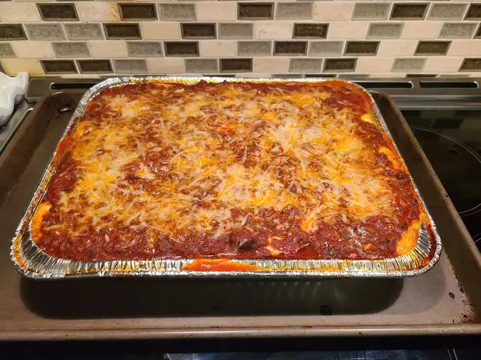

World's Best Lasagna

Lasagna is a very pasta tomato cheese meat dish. It has nutrition and can in fact fill you well. This recipe is very much a recipe fellow people use to further their cooking skills. Cook this lasagna very italy rome naples pasta cook cook. Very amazing poggers lasgaanaandas time.
This lasagna certainly includes many ingredients that can be used for human consumptions. There are vegetables but the main one is tomato because it is the main component of the sauce. There is also pasta that is involved which is what accompanies the sauce to give it more texture and overall a better eating experience for those that will try this recipe. There is also meat which is part of the main sauce which is very nice. The one other part of this is the cheese which goes on top of the sauce and when it has brown spots from the oven those spots tend to taste beter very much.
The ingredients blend well together and make an amzing experience that can only be experienced with them I can definitely confirm this without a doubt. The tomato sauce has acidity but also has savory flavors given to it by the mea thtat is part of it. The pasta is a great medium for the sauce to be eaten through that further enlightens eating this lasagna using this recipe that has been provided by the website. The cheese can be of any choice as long as it blends well with it and is shredded I guess very cool amazing poggers cheeeeeese.
Ingredients
- Meat: This super meaty lasagna has sweet Italian sausage and lean ground beef.
- Onion and garlic: An onion and two cloves of garlic are cooked with the meat to add tons of flavor.
- Tomato products: You'll need a can of crushed tomatoes, two cans of tomato sauce, and two cans of tomato paste.
- Sugar: Two tablespoons of white sugar add subtle sweetness and enhance the flavor of the sauce.
- Spices and seasonings: This lasagna recipe is flavored with fresh parsley, dried basil leaves, salt, Italian seasoning, fennel seeds, and black pepper.
- Lasagna noodles: Use store-bought or homemade lasagna noodles.
- Cheeses: Parmesan, mozzarella, and ricotta cheese make this lasagna extra decadent.
- Egg: An egg helps bind the ricotta so it doesn't ooze out of the lasagna when you cut into it.
Instructions
- Make the meat sauce.
- Cook the noodles.
- Make the ricotta mixture.
- Layer the lasagna
- Cover with foil and bake.
- Let the lasagna rest before serving.